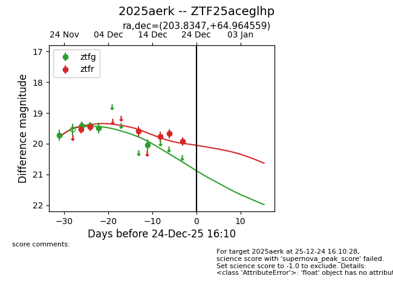
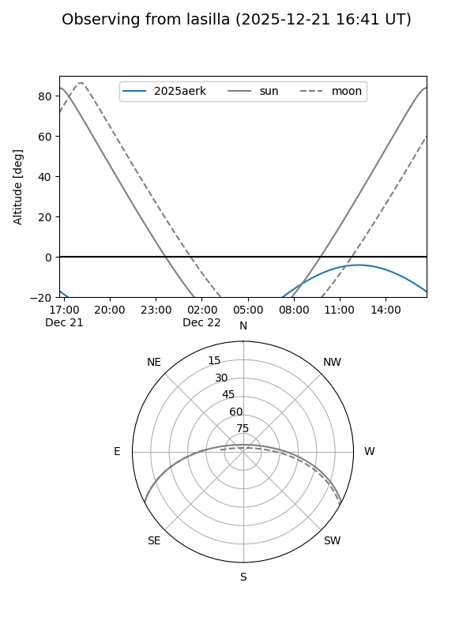
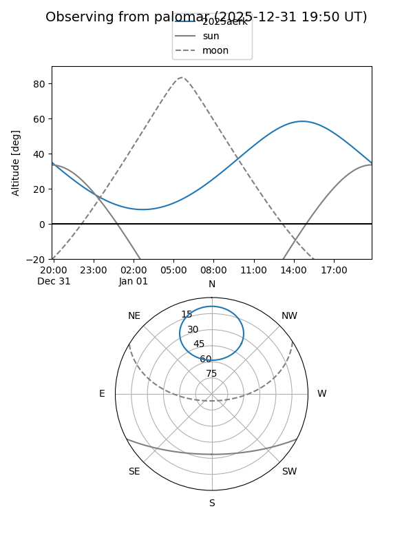
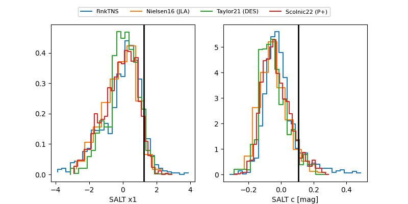

2025aerk
Target 2025aerk at 2025-12-31 18:00
Aliases and brokers:
FINK: link
Lasair: link
ALeRCE: link
TNS: link
YSE: link
alt names
ZTF25aceglhp (ztf,fink_ztf)
2025aerk (tns,yse)
Coordinates:
equatorial (ra, dec) = 203.8347,+64.96456
equatorial (HMS+DMS) = 13:35:20.33,+64:57:52.41
galactic (l, b) = (115.4917,+51.52483)
Flags:
Photometry:
last ztfg=20.05, ztfr=19.92
5 ztfg, 6 ztfr detections
Lightcurve

Visibility


Additional plots
